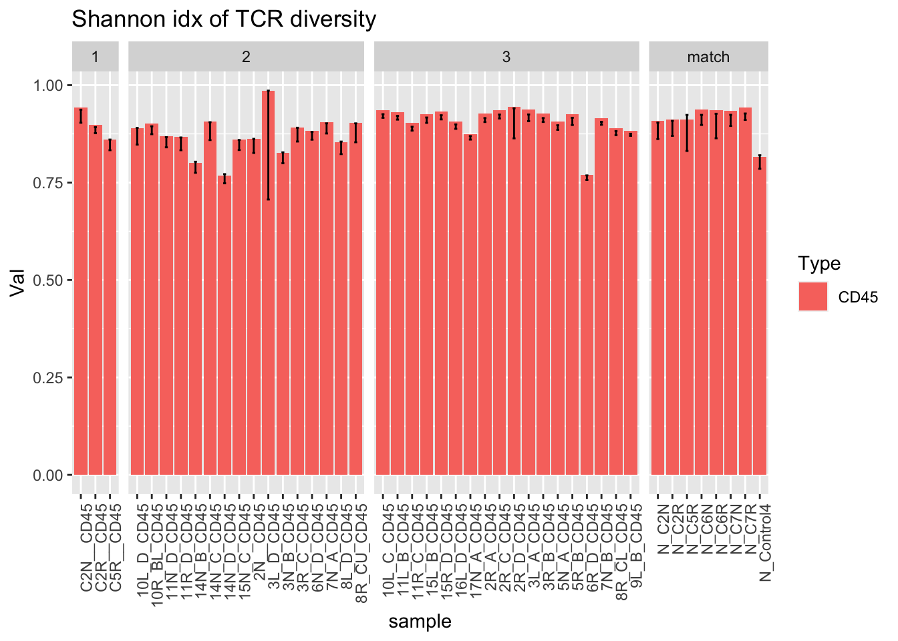
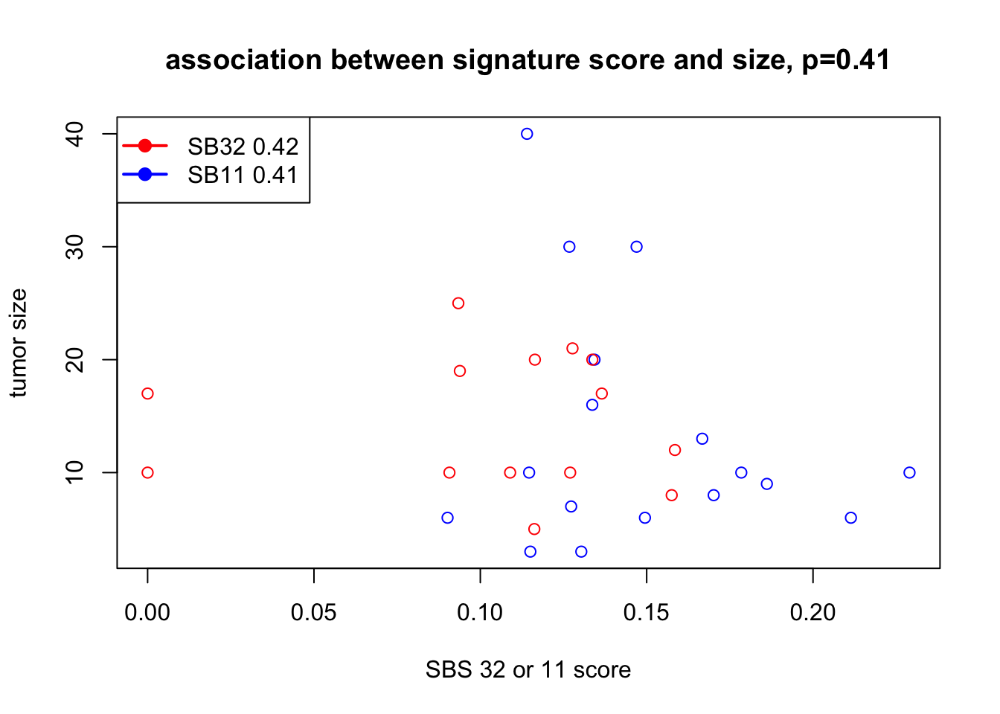
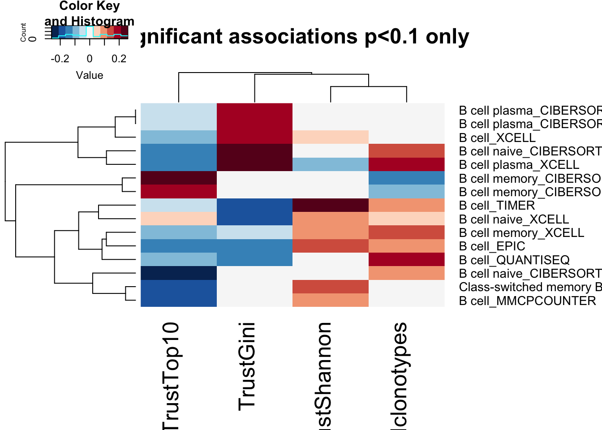
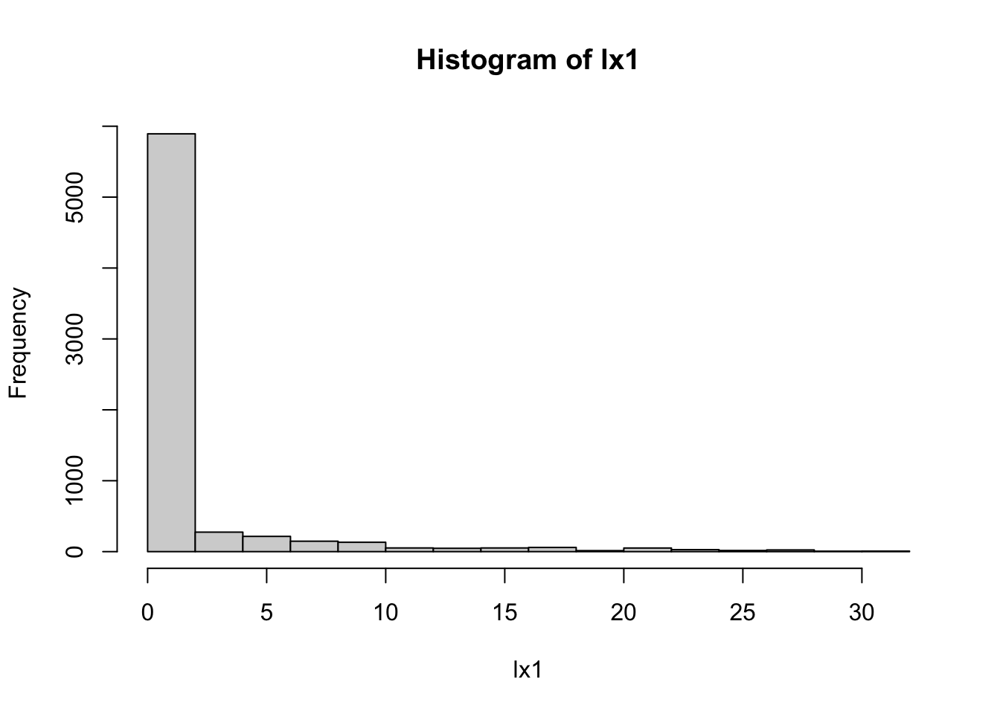
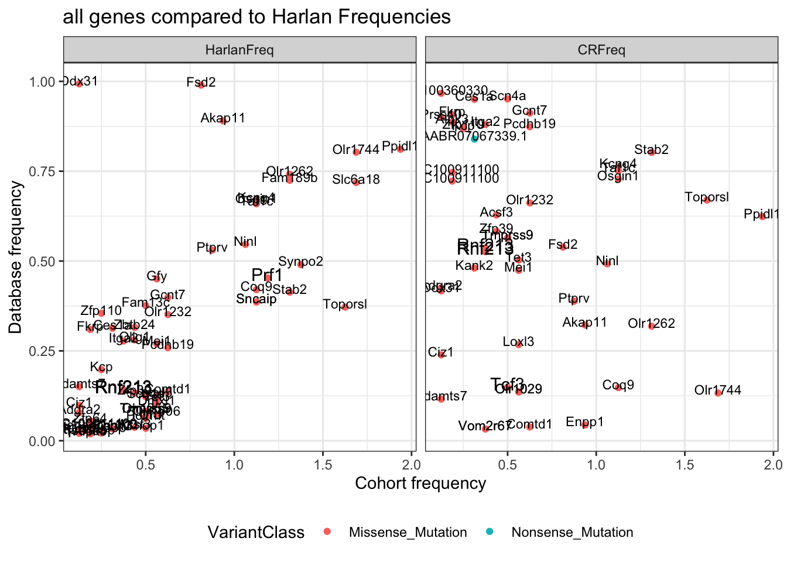
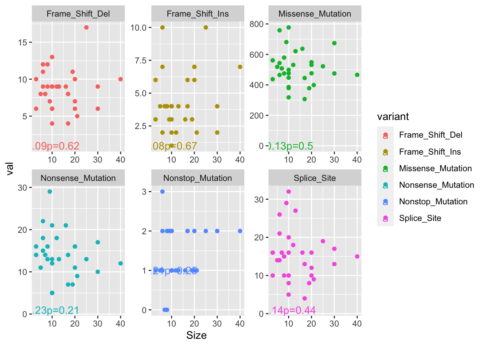
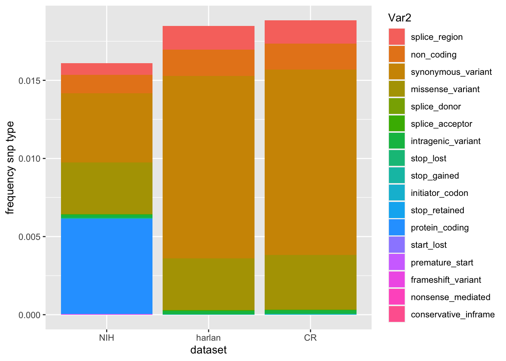

Chapter 21 Whole Genome Sequencing Mutations
Whole genome sequencing was performed on XX samples by the new york genome centre. The pipeline involves:
Insert information on the NYGC pipeline here
21.1 Data
In this section, we load the maf output files and create lists which
- filter out coding mutations
- Determine mutational signatures by:
- Creating bed files with genomic locations of the SNP +- 1 base location
- Extracting the nucleotide sequence using bedtools
- Convert all mutations to C > N and T > N to obtain 96 mutational signatures
- run with single sample SigProfiler to obtain the signature scores
- Annotate data with common human variants
# Load and save for the first time here
# redo
mafdir='../data/wholegenome_mutations/maf/'
x1=dir(mafdir, 'annotated.maf')
#names2=sapply(strsplit( x1,"--"), function(x) x[1])
AllMutWGS=lapply(x1, function(x) read.delim(paste(mafdir, x, sep=""), sep="\t", skip = 1))
names(AllMutWGS)=sapply(strsplit( x1,"--"), function(x) x[1])
# # ## summary of the number of mutations?
print('no of mutations')
## [1] "no of mutations"
TotCount=lapply(AllMutWGS, nrow)
SearchVars=c("Splice_Site", "Nonstop_Mutation", "Nonsense_Mutation", "Missense_Mutation", "Frame_Shift_Ins", "Frame_Shift_Del")
AllMutWGS=lapply(AllMutWGS, function(x) {x$VAF<-x$t_alt_count/(x$t_alt_count+x$t_ref_count); x})
AllMutWGScoding=lapply(AllMutWGS, function(x) x[ x$Variant_Classification%in%SearchVars, ])
A2=sapply(AllMutWGScoding, nrow)
# Save the combined mutation lists
save(AllMutWGS, AllMutWGScoding, file=sprintf("outputs/WGS_mutations_coding_%s.RData", Sys.Date()))
## filters on VAF and depth?
AllMutWGScoding=lapply(AllMutWGScoding, function(x) {x<-x[which(x$VAF>=0.1 & x$n_ref_count>8 &
(x$t_alt_count+x$t_ref_count)>14), ]; x})
#load('data/wholegenome_mutations/WGS_mutations_coding_2020-10-14.RData')
MeltWGSCoding=melt(AllMutWGScoding, measure.vars=c("Tumor_Sample_Barcode"))
MeltWGSCoding$Hum_Gene=SymHum2Rat$HGNC.symbol[match(MeltWGSCoding$Gene_Symbol, SymHum2Rat$RGD.symbol)]
MeltWGSCoding$Hum_Gene[which(is.na(MeltWGSCoding$Hum_Gene))]=toupper(MeltWGSCoding$Gene_Symbol[which(is.na(MeltWGSCoding$Hum_Gene))])
MutAllCosmic=lapply(AllMutWGScoding, function(x) x[which(x$Gene_Symbol%in%RatCosmic), ])
MeltCosmic=melt(MutAllCosmic, measure.vars=c("Tumor_Sample_Barcode"))# Find complete numbers here, so we don't have to go back
TotCount=sapply(AllMutWGS, nrow)
SearchVars=c("Splice_Site", "Nonstop_Mutation", "Nonsense_Mutation", "Missense_Mutation", "Frame_Shift_Ins", "Frame_Shift_Del")
head(TotCount)
## C1R-tumor C2N-tumor C2R1-tumor C2R2-tumor C2R3-tumor C4P-tumor
## 240153 262425 235677 222717 238324 25867721.1.1 Extract mutation signatures
Annotate the files so that the nucleotide codon can be extracted based on the genome file. For this, use all mutations (not just coding ones) See the bash file extract-trinucleotide-forSigProfiler.sh to see the output of this. The output table $fout3 should have 6 columns with the genomic location, the reference and alt allele and codon context.
TBed=lapply(AllMutWGScoding, function(x) cbind(as.character(x$Chromosome), x$Start_Position-2, x$End_Position+1, as.character(x$Reference_Allele), as.character(x$Tumor_Seq_Allele2)))
TBed=lapply(TBed, function(x) x[which(nchar(x[ ,4])==1), ])
sapply(1:length(TBed), function(x) write.table(TBed[[x]], file=paste(names(TBed)[x], "coding_tricodon.bed", sep="_"),col.names=F, row.names = F, sep="\t", quote = F))
## bedtools command
bedtools getfasta -fi ../Genomic_Files/rn6.fa -bed $f -tab -fo $fout
f3() { awk '{print $1, $2, $3, $4 ,$5}' "$1"; }; paste <(f3 $f) <(f3 $fout) > $fout2
awk '{if (length($7)==3) print $1, $2, $3, $4, $5, toupper($7)}' $fout2 > $fout3
## see the bash file extract-trinucleotide-forSigProfiler.sh to see the output of this.Following running the above bash script, we can run the following extract the tri-nucleotide sequence
FFiles=dir("../data/tricodon_mut_sigs/extract_context/", "*.txt",full.names=T)
OutputList=sapply(FFiles, function(x) FindTriNucleotideContext(x))
TableOut=sapply(1:ncol(OutputList), function(x) unlist(OutputList[3, x]))
## make a plot here
# condense the type of mutations here
a1=basename(FFiles)
a2=sapply(strsplit(a1, "_"), function(x) x[1])
xall=as.character(unlist(OutputList[1, 1]))
TestAll=sapply(1:ncol(TableOut), function(x) unlist(by(TableOut[ ,x], xall, sum)))
TestAll2=t(TestAll)/colSums(TestAll)
rownames(TestAll2)=sapply(a2, function(x) Cdata$NewID[grep(x, Cdata$WGS)])
TestAll2melt=melt(TestAll2)
#pdf("~/Desktop/Frequency_mutations_6types.pdf", height=5, width=6)
ggplot(TestAll2melt, aes(x=Var1, y=value, fill=Var2))+geom_bar(stat="identity")+theme_bw()+theme(axis.text.x=element_text(angle=90))+ylab("Frequency of Mutation")
Figure 21.1: Frequency of different mutational codons
#dev.off()
write.csv(TestAll2melt, file="nature-tables/1j.csv")
TableOut=cbind(as.character(unlist(OutputList[1, 1])), as.character(unlist(OutputList[2, 1])), TableOut)
colnames(TableOut)=c("MutationType","Nutrinucleotide", paste("BRCA", a2, sep="::"))
#write.csv(TableOut, file="../data/tricodon_mut_sigs/output4SigProfiler-jan2021.csv", sep = ",", row.names = F)This is then run in python (sigprofiler) with the following code:
module load gcc
module load python/3.7.4
python3
import SigProfilerExtractor
from sigproSS import spss_pcwag ## (spss uses only vcf files)
spss_pcwag.single_sample_pcwag("output4SigProfiler-jan2021.csv", output="output-jan2021")The results from this analysis are shown below
SBSprof=read.delim("../data/tricodon_mut_sigs/output-jan2021-allsamples/sig_activities.txt", sep="\t")
SBSprofb=SBSprof[ ,-1]/rowSums(SBSprof[ ,-1])
SBSprofb=SBSprofb[ ,-which(colSums(SBSprofb)==0)]
rownames(SBSprofb)=SBSprof[ ,1]
SBSmelt=melt(cbind(SBSprofb[ , -1], id=rownames(SBSprofb)))
SBSsummary <- aggregate(. ~ variable, mean, data=SBSmelt)
ggplot(SBSmelt, aes(x=variable, y=value, col=variable))+geom_jitter()+geom_crossbar(data=SBSsummary , aes(ymin = value, ymax = value),size=0.5,col="black", width = .7)+theme_bw()+ylab("Percentage of mutations")
Figure 21.2: Alexandrov mutational signatures
We can see whether any of these associate with tumor size for example:
## Assign with growth data or tumor size?
tname=substr(SBSprof$Cancer.Types, 7, 20)
idx=sapply(tname, function(x) grep(x, Cdata$WGS))
sizeInfo=Cdata$Tumor.diameter.sac.mm[idx]
#par(mfrow=c(2,1))
cor1=cor.test(SBSprofb$SBS32+SBSprofb$SBS11, sizeInfo, use="complete")
cor2=cor.test(SBSprofb$SBS32[which(SBSprofb$SBS32>0)], sizeInfo[which(SBSprofb$SBS32>0)], use="complete")
cor3=cor.test(SBSprofb$SBS11[which(SBSprofb$SBS11>0)], sizeInfo[which(SBSprofb$SBS11>0)], use="complete")
plot(SBSprofb$SBS32+SBSprofb$SBS11, sizeInfo, xlab="SBS 32 or 11 score", ylab="tumor size",
col=ifelse(SBSprofb$SBS11==0, "red", "blue"), main=sprintf("association between signature score and size, p=%s", round(cor1$p.value, 2)))
legend("topleft",c(paste("SB32", round(cor2$p.value,2)), paste("SB11",round(cor3$p.value,2))), col=c("red", "blue"), lwd=2, pch=19)
## Associations version 2
SBSprofb$Age=Cdata$Time.NMU2Sac.days[sapply(substr(rownames(SBSprofb), 7, 30), function(x) grep(x, Cdata$WGS))]
SBSprofb$Cohort=Cdata$Char.Cohort.Batch[sapply(substr(rownames(SBSprofb), 7, 30), function(x) grep(x, Cdata$WGS))]
par(mfrow=c(2,2))
plot(SBSprofb$Age,SBSprofb$SBS1, ylab="Frequency Mut in SBS1", xlab="Time NMU2Sac", main="SBS1", col=factor(SBSprofb$Cohort))
plot( SBSprofb$Age, SBSprofb$SBS5, ylab="Frequency Mut in SBS5", xlab="Time NMU2Sac", main="SBS5", col=factor(SBSprofb$Cohort))
plot(SBSprofb$Age, SBSprofb$SBS32+SBSprofb$SBS11, ylab="SBS 32 or 11 score", xlab="tumor size",
col=ifelse(SBSprofb$SBS11==0, "red", "blue"), main="SBS11/32")
21.2 Annotate the data with human common variants
## The following is run independently and saved to fle
## issues with the RnvorV87 pointer when cached
# remove sourcing CreateRnor87
## Append to MeltCosmic?
source("../rscript/CreateRnor87db.R")
AAout=strsplit(as.character(MeltCosmic$HGVSp_Short), "[0-9]+")
AAwt=sapply(AAout, function(x) x[1])
AAmt=sapply(AAout, function(x) x[2])
AAno=regmatches(MeltCosmic$HGVSp_Short, gregexpr("[[:digit:]]+", MeltCosmic$HGVSp_Short))
MeltCosmic$AAno=NA
MeltCosmic$AAno[which(sapply(AAno, length)==1)]=as.numeric(as.character(unlist(AAno)))
FindVarTest=FindHumanAAHomolog(MeltCosmic$Gene_Symbol, AAwt, MeltCosmic$AAno, AAmt)
MeltCosmic=cbind(MeltCosmic, FindVarTest)
dim(MeltCosmic)
save(MeltCosmic, file=sprintf("outputs/MeltCosmic_coding_genes_WGS_rat_VAFncount%s.RData", Sys.Date())) #, sep="\t", row.names=F)
write.csv(MeltCosmic, file="nature-tables/SupplementalTable4_AllRatMutations_annotated_w_human_homolog_VAFncount.csv", row.names = F, quote=F)From this analysis, below are the genes with mutations in known human hotpot mutations in common genes
load("outputs/MeltCosmic_coding_genes_WGS_rat_VAFncount2021-01-11.RData")
Xa=which(MeltCosmic$Gene_Symbol %in% BList$RatGene)
Xb=match(paste(MeltCosmic$Gene_Symbol, MeltCosmic$AAno), paste(BList$RatGene,BList$RatAAno))
Xc=match(paste(MeltCosmic$Gene_Symbol, MeltCosmic$AAno), paste(ChangList2$RatGene, ChangList2$RatAAno))
x2=c(which(!is.na(Xb)), which(!is.na(Xc)))
BList[(na.omit(Xb)), ]
## Gene AAno AA1 Variant RatGene Sequence HumProt
## 128 HRAS 12 G R Hras VVVGAGGVGKS ENSP00000380722
## 128.1 HRAS 12 G R Hras VVVGAGGVGKS ENSP00000380722
## 128.2 HRAS 12 G R Hras VVVGAGGVGKS ENSP00000380722
## 128.3 HRAS 12 G R Hras VVVGAGGVGKS ENSP00000380722
## 128.4 HRAS 12 G R Hras VVVGAGGVGKS ENSP00000380722
## 128.5 HRAS 12 G R Hras VVVGAGGVGKS ENSP00000380722
## 8 BRAF 466 G E Braf QRIGSGSFGTV ENSP00000288602
## 128.6 HRAS 12 G R Hras VVVGAGGVGKS ENSP00000380722
## 414 TP53 266 G R Tp53 SGNLLGRNSFE ENSP00000352610
## RatProt RatAAno RatSequence
## 128 ENSRNOP00000022363 12 VVVGAGGVGKS
## 128.1 ENSRNOP00000022363 12 VVVGAGGVGKS
## 128.2 ENSRNOP00000022363 12 VVVGAGGVGKS
## 128.3 ENSRNOP00000022363 12 VVVGAGGVGKS
## 128.4 ENSRNOP00000022363 12 VVVGAGGVGKS
## 128.5 ENSRNOP00000022363 12 VVVGAGGVGKS
## 8 ENSRNOP00000014604 411 QRIGSGSFGTV
## 128.6 ENSRNOP00000022363 12 VVVGAGGVGKS
## 414 ENSRNOP00000047840 264 SGNLLGRDSFE
ChangList2[(na.omit(Xc)), ]
## Gene AAno AA1 Variant RatGene Sequence HumProt
## 415 HRAS 12 G D Hras VVVGAGGVGKS ENSP00000380722
## 415.1 HRAS 12 G D Hras VVVGAGGVGKS ENSP00000380722
## 415.2 HRAS 12 G D Hras VVVGAGGVGKS ENSP00000380722
## 1253 PIK3CA 350 D N Pik3ca NVNIRDIDKIY ENSP00000263967
## 415.3 HRAS 12 G D Hras VVVGAGGVGKS ENSP00000380722
## 415.4 HRAS 12 G D Hras VVVGAGGVGKS ENSP00000380722
## 415.5 HRAS 12 G D Hras VVVGAGGVGKS ENSP00000380722
## 555 BRAF 466 G V Braf QRIGSGSFGTV ENSP00000288602
## 347 PIK3CA 118 G D Pik3ca LNREIGFAIGM ENSP00000263967
## 415.6 HRAS 12 G D Hras VVVGAGGVGKS ENSP00000380722
## 299 TP53 266 G R Tp53 SGNLLGRNSFE ENSP00000352610
## 69 PIK3CA 542 E K Pik3ca RDPLSEITEQE ENSP00000263967
## RatProt RatAAno RatSequence
## 415 ENSRNOP00000022363 12 VVVGAGGVGKS
## 415.1 ENSRNOP00000022363 12 VVVGAGGVGKS
## 415.2 ENSRNOP00000022363 12 VVVGAGGVGKS
## 1253 ENSRNOP00000072496 350 NVNIRDIDKIY
## 415.3 ENSRNOP00000022363 12 VVVGAGGVGKS
## 415.4 ENSRNOP00000022363 12 VVVGAGGVGKS
## 415.5 ENSRNOP00000022363 12 VVVGAGGVGKS
## 555 ENSRNOP00000014604 411 QRIGSGSFGTV
## 347 ENSRNOP00000072496 118 LNREIGFVIGM
## 415.6 ENSRNOP00000022363 12 VVVGAGGVGKS
## 299 ENSRNOP00000047840 264 SGNLLGRDSFE
## 69 ENSRNOP00000072496 542 RDPLSEITEQE
Xb=match(paste(MeltCosmic$HumGene, MeltCosmic$HumAAno), paste(BList$Gene,BList$AAno))
Xc=match(paste(MeltCosmic$HumGene, MeltCosmic$HumAAno), paste(ChangList2$Gene, ChangList2$AAno))
x3=c(which(!is.na(Xb)), which(!is.na(Xc)))
x4=unique(c(x2, x3))
DT::datatable(MeltCosmic[x4, c(1,5,6)], rownames=F, class='cell-border stripe',
extensions="Buttons", options=list(dom="Bfrtip", buttons=c('csv', 'excel')))
BList[(na.omit(Xb)), ]
## Gene AAno AA1 Variant RatGene Sequence HumProt
## 128 HRAS 12 G R Hras VVVGAGGVGKS ENSP00000380722
## 128.1 HRAS 12 G R Hras VVVGAGGVGKS ENSP00000380722
## 128.2 HRAS 12 G R Hras VVVGAGGVGKS ENSP00000380722
## 128.3 HRAS 12 G R Hras VVVGAGGVGKS ENSP00000380722
## 128.4 HRAS 12 G R Hras VVVGAGGVGKS ENSP00000380722
## 128.5 HRAS 12 G R Hras VVVGAGGVGKS ENSP00000380722
## 8 BRAF 466 G E Braf QRIGSGSFGTV ENSP00000288602
## 128.6 HRAS 12 G R Hras VVVGAGGVGKS ENSP00000380722
## 414 TP53 266 G R Tp53 SGNLLGRNSFE ENSP00000352610
## RatProt RatAAno RatSequence
## 128 ENSRNOP00000022363 12 VVVGAGGVGKS
## 128.1 ENSRNOP00000022363 12 VVVGAGGVGKS
## 128.2 ENSRNOP00000022363 12 VVVGAGGVGKS
## 128.3 ENSRNOP00000022363 12 VVVGAGGVGKS
## 128.4 ENSRNOP00000022363 12 VVVGAGGVGKS
## 128.5 ENSRNOP00000022363 12 VVVGAGGVGKS
## 8 ENSRNOP00000014604 411 QRIGSGSFGTV
## 128.6 ENSRNOP00000022363 12 VVVGAGGVGKS
## 414 ENSRNOP00000047840 264 SGNLLGRDSFE
ChangList2[(na.omit(Xc)), ]
## Gene AAno AA1 Variant RatGene Sequence HumProt
## 415 HRAS 12 G D Hras VVVGAGGVGKS ENSP00000380722
## 415.1 HRAS 12 G D Hras VVVGAGGVGKS ENSP00000380722
## 415.2 HRAS 12 G D Hras VVVGAGGVGKS ENSP00000380722
## 1253 PIK3CA 350 D N Pik3ca NVNIRDIDKIY ENSP00000263967
## 415.3 HRAS 12 G D Hras VVVGAGGVGKS ENSP00000380722
## 415.4 HRAS 12 G D Hras VVVGAGGVGKS ENSP00000380722
## 415.5 HRAS 12 G D Hras VVVGAGGVGKS ENSP00000380722
## 555 BRAF 466 G V Braf QRIGSGSFGTV ENSP00000288602
## 347 PIK3CA 118 G D Pik3ca LNREIGFAIGM ENSP00000263967
## 1178 ATM 3008 R H Atm NKVAERVLMRL ENSP00000388058
## 415.6 HRAS 12 G D Hras VVVGAGGVGKS ENSP00000380722
## 299 TP53 266 G R Tp53 SGNLLGRNSFE ENSP00000352610
## 69 PIK3CA 542 E K Pik3ca RDPLSEITEQE ENSP00000263967
## RatProt RatAAno RatSequence
## 415 ENSRNOP00000022363 12 VVVGAGGVGKS
## 415.1 ENSRNOP00000022363 12 VVVGAGGVGKS
## 415.2 ENSRNOP00000022363 12 VVVGAGGVGKS
## 1253 ENSRNOP00000072496 350 NVNIRDIDKIY
## 415.3 ENSRNOP00000022363 12 VVVGAGGVGKS
## 415.4 ENSRNOP00000022363 12 VVVGAGGVGKS
## 415.5 ENSRNOP00000022363 12 VVVGAGGVGKS
## 555 ENSRNOP00000014604 411 QRIGSGSFGTV
## 347 ENSRNOP00000072496 118 LNREIGFVIGM
## 1178 ENSRNOP00000072646 3014 NKVAERVLMRL
## 415.6 ENSRNOP00000022363 12 VVVGAGGVGKS
## 299 ENSRNOP00000047840 264 SGNLLGRDSFE
## 69 ENSRNOP00000072496 542 RDPLSEITEQEAnd here, we plot the frequency of these different mutations
idx=which(!is.na(MeltCosmic$HumAAno))
length(idx)
## [1] 383
Nx=paste(MeltCosmic$Gene[idx], MeltCosmic$AAno[idx])
T2=sort(table(Nx), decreasing = T)
#head(T2)
ind2=which(T2>1)
#pdf("~/Desktop/Frequency_of_mutations.pdf", height=6, width=9)
barplot(T2[ind2]/31, ylim=c(0, 1), main="most frequent coding mutations with human homolog", las=2)Figure 21.3: most frequent mutations
Also filter these to breast specific aberrations: CHECK THIS
MeltComicB=MeltCosmic[which(MeltCosmic$Gene_Symbol%in%RatBreastCosmic), ]
idx=which(!is.na(MeltComicB$HumAAno))
Nx=paste(MeltComicB$Gene[idx], MeltComicB$AAno[idx])
T2a=sort(table(Nx), decreasing = T)
#head(T2)
head(T2a)
## integer(0)
T2b=sort(table(MeltComicB$Gene_Symbol), decreasing = T)
head(T2b)
##
## Arid1a Foxa1 Brca2 Flna Pik3ca Tp53
## 6 5 3 3 3 2
#pdf("~/Desktop/Frequency_of_mutations.pdf", height=6, width=9)
# par(mfrow=c(1,2))
# barplot(T2a/31, ylim=c(0, 0.2), main="most frequent BRCA with human homolog", las=2)
# barplot(T2b/31, ylim=c(0, 0.2), main="most frequent coding BRCA mutations", las=2)
#dev.off()
ttemp=names(T2[ind2])Nx=paste(MeltCosmic$Gene, MeltCosmic$AAno)
T2=sort(table(Nx), decreasing = T)
ind2=which(T2>1)
#pdf("~/Desktop/Frequency_of_mutations_2.pdf", height=6, width=9)
barplot(T2[ind2]/31, ylim=c(0, 1), main="most frequent coding mutations ", las=2)#dev.off()
tableout=data.frame(gene=names(T2[ind2]), ncount=T2[ind2], freq=T2[ind2]/31,
humanHom=ifelse(names(T2[ind2])%in%ttemp, 1, 0))
#write.csv(tableout, file="nature-tables/Ext1k_maybe.csv")
DT::datatable(tableout, rownames=F, class='cell-border stripe',
extensions="Buttons", options=list(dom="Bfrtip", buttons=c('csv', 'excel')))We can also use the cosmic mutational database to see whether any of these mutations overlap: (version 92)
Edit the stuff here:
Ax1=match(paste(MeltCosmic$HumGene, MeltCosmic$HumAAno), paste(Cmut$GENE_NAME, Cmut$AA_MUT_START))
Ax1
## [1] NA NA NA NA NA 3579426 NA NA 1934438
## [10] NA NA NA NA 3182147 NA NA NA NA
## [19] NA 2997088 NA NA NA NA NA NA NA
## [28] NA 1059801 NA NA NA NA NA 2804349 NA
## [37] 4470423 NA NA NA NA NA NA 4131069 NA
## [46] NA NA NA NA NA NA NA NA NA
## [55] 2804349 NA 4470423 NA NA NA NA NA NA
## [64] 1442364 NA NA NA 972952 NA NA NA NA
## [73] NA 2804349 NA NA 4470423 1813967 1225033 NA NA
## [82] NA NA 3408942 NA 536410 NA NA NA NA
## [91] NA NA NA NA NA 2321788 NA NA NA
## [100] NA NA NA NA NA NA NA NA NA
## [109] NA NA NA NA 2321788 3579612 249764 249764 NA
## [118] NA NA NA NA NA NA 2997088 NA NA
## [127] NA NA NA NA NA NA NA NA NA
## [136] NA NA NA 4437142 NA NA NA 329517 NA
## [145] 2997088 NA NA NA NA 2387389 NA NA NA
## [154] NA NA NA NA NA NA NA NA NA
## [163] NA NA 4470675 299229 NA 3947247 NA NA NA
## [172] 1967695 2997088 NA NA NA NA NA NA NA
## [181] NA NA NA 3817808 NA NA NA 4325112 NA
## [190] NA 3579612 NA NA 299229 NA 2997088 NA NA
## [199] NA NA NA NA NA NA NA NA NA
## [208] NA NA NA 3579612 249764 249764 299229 1462810 2997088
## [217] 1864157 NA NA NA NA 1572878 NA NA NA
## [226] NA NA NA NA 323572 NA NA NA NA
## [235] 2804349 NA 4470423 NA NA NA NA 2997088 NA
## [244] NA NA NA NA NA NA 2321788 NA NA
## [253] 249764 249764 NA 1211561 231932 2997088 1875629 NA NA
## [262] NA NA 535044 NA NA NA NA NA NA
## [271] NA NA NA NA NA 858704 1923136 NA NA
## [280] 1706912 NA NA NA NA 220696 2382160 NA NA
## [289] NA NA NA 3140387 3579612 NA NA NA NA
## [298] NA NA NA NA NA NA 2997088 NA 569243
## [307] 3182147 NA 1238663 NA NA NA 2779340 NA NA
## [316] 2493470 NA NA 3579612 2804611 NA NA NA NA
## [325] NA NA 3333928 NA 860990 NA NA 2997088 NA
## [334] 1944909 NA NA NA 640765 NA NA NA NA
## [343] NA NA NA NA NA NA NA NA 2804349
## [352] NA NA NA NA NA NA NA NA NA
## [361] NA 660372 403079 NA NA 219815 NA NA NA
## [370] NA NA NA NA NA NA NA NA 2804349
## [379] NA NA 2997088 NA NA NA 2065818 NA NA
## [388] NA NA NA 2762883 NA NA NA NA 3277818
## [397] NA NA NA NA NA 833869 NA NA NA
## [406] NA NA NA NA NA NA 3579612 NA NA
## [415] NA NA 1863647 NA NA NA NA NA 4130777
## [424] NA NA NA NA NA 2321788 NA NA NA
## [433] NA 2997088 NA NA NA NA NA NA NA
## [442] NA 4239300 1803203 NA NA NA NA 119744 NA
## [451] NA NA NA 2997088 1875594 NA 2169357 NA NA
## [460] NA NA 1480666 NA NA NA NA NA NA
## [469] NA 4253020 NA 2417918 NA NA 4107129 3634329 NA
## [478] 4341899 2107476 NA NA NA NA 3579612 NA 3447720
## [487] 4470284 NA NA NA NA NA NA NA 1026414
## [496] NA 1240808 2997088 1875554 1768181 NA NA 3913348 3794827
## [505] NA NA NA NA NA NA NA NA NA
## [514] NA NA NA NA NA NA NA NA NA
## [523] NA NA 3884698 2997088 NA NA 2854296 NA NA
## [532] 206581 NA NA NA NA NA NA NA NA
## [541] NA NA NA NA NA NA 860979 860989 NA
## [550] 2997088 NA NA 363033 2381738 NA NA NA NA
## [559] 2321788 323180 2603243 249764 NA 3565143 NA NA NA
## [568] NA NA NA NA 1545806 NA 1864218 NA NA
## [577] NA 1550110 NA 3096457 NA NA NA NA NA
## [586] NA NA NA NA NA NA 1813963 NA NA
## [595] 860979 860989 NA NA 2997088 NA NA NA NA
## [604] NA NA NA 4268634 NA NA 3402625 NA NA
## [613] NA NA NA NA NA 1871605 NA NA NA
## [622] NA NA NA 219815 NA NA NA NA NA
## [631] NA NA NA NA 2997088 NA NA NA NA
## [640] NA NA NA NA NA NA NA 2198895 3833218
## [649] NA NA NA NA NA NA NA NA NA
## [658] NA NA NA NA NA NA 2787457 NA NA
## [667] 219815 NA NA NA NA NA NA NA 3451450
## [676] NA 4471138 NA NA NA 860979 860989 NA NA
## [685] NA NA NA NA NA NA
head(paste(MeltCosmic$HumGene, MeltCosmic$HumAAno))
## [1] "NCOR2 NA" "NCOR2 1990" "CLIP1 NA" "CLIP1 859" "CXCR4 10"
## [6] "NRG1 209"
head(paste(Cmut$GENE_NAME, Cmut$AA_MUT_START))
## [1] "SYNPO2L 251" "SYNPO2L 669" "SYNPO2L 889" "SYNPO2L 407" "SYNPO2L 593"
## [6] "SYNPO2L 24"
tempA=Cmut[ na.omit(Ax1), c("GENE_NAME","Mutation.CDS", "Mutation.AA", "CLINVAR_CLNSIG")]
DT::datatable(tempA,
rownames=F, class='cell-border stripe',
extensions="Buttons", options=list(dom="Bfrtip", buttons=c('csv', 'excel')))21.3 Plots
21.3.1 Quick overview
WGS all mutations summary: Look at the overall mutation burden, and the tumor mutational burden, defined as # coding mutations per MB.
The following plot lists tumors in increasing size
Make plots of:
- overall types of mutations per sample (ranked by size)
- correlation between mutation type and size
- type of mutation?
#load("data/wholegenome_mutations/WGS_mutations_coding.RData")
TabSamples=lapply(AllMutWGScoding, function(x) table(factor(x$Variant_Classification, levels=SearchVars)))
TabSamples2=unlist(TabSamples)
namidx=sapply(strsplit(names(TabSamples2), "\\."), function(x) x[1])
namidx2=sapply(strsplit(names(TabSamples2), "\\."), function(x) x[2])
namidx3=sapply(namidx, function(x) Cdata$NewID[grep(x, Cdata$WGS)])
TotTabl=data.frame(val=TabSamples2, nam=namidx, variant=namidx2, nam2=namidx3)
## remove 0 samples
# searchNo=stack(by(TotTabl$val, TotTabl$variant, sum))
# TotTabl=TotTabl[ which(TotTabl$variant %in% searchNo$ind[which(searchNo$values!=0)]), ]
lx1=match(TotTabl$nam2, Cdata$NewID, function(x) tryCatch({x[1]}, error=function(e){NA}))
TotTabl$Size=Cdata$Tumor.diameter.sac.mm[lx1]
TotTabl=TotTabl[order(TotTabl$Size, TotTabl$val), ]
levelNam=unique(TotTabl$nam2)
TotTabl$nam2=factor(TotTabl$nam2, levels=levelNam)
##pdf(sprintf("rslt/WGS/coding_mutation_types_%s.pdf", Sys.Date()), height=6, width=9)
#pdf("~/Desktop/No_mutations_VAFncount_adjusted_TMB.pdf", height = 5, width=7)
ggplot(TotTabl, aes(x=nam2, y=val/43.423804, fill=variant))+geom_bar(stat="identity")+scale_fill_manual(values=c("black", brewer.pal(9, "Set1")))+theme_bw()+theme(axis.text.x=element_text(angle=90))+ylab("Number of coding mutations/Mb")+ggtitle("sorted by increasing tumor size at sac")Figure 21.4: summary of mutation burden
#dev.off()
#write.csv(TotTabl, file="nature-tables/1i.csv")
DT::datatable(TotTabl, rownames=F, class='cell-border stripe',
extensions="Buttons", options=list(dom="Bfrtip", buttons=c('csv', 'excel')))Figure 21.4: summary of mutation burden
We can also see whether any of these correlate with size, but didn’t find associations as shown below:
ax1=lapply(sort(SearchVars), function(x) cor.test(TotTabl[TotTabl$variant==x , "val"], TotTabl[TotTabl$variant==x , "Size"], use="complete", method="spearman"))
pvals=sapply(ax1, function(x) x$p.value)
cors=sapply(ax1, function(x) x$estimate)
ann_text2 <- data.frame(lab=paste("cor=", round(cors, 2),"p=", round(pvals,2),sep=""), variant=sort(SearchVars), val=1, Size=5)
ggplot(TotTabl, aes(x=Size, y=val, col=variant))+geom_point()+facet_wrap(~variant, scale="free")+geom_text(data=ann_text2, aes(label=lab))
21.3.2 Coding variants & TMB
There are a few ways of figuring out the TMB. We can
- report the number of mutations (missense, insertion/deletion, frameshifts, nonsense)
- normalise the above value to the known length of coding regions in the rat genome (UCSC exon length 43,423,804)
- plot of TMB vs objective response rate: there is no true relationship between final tumor size and mutational burden. Could also be confounded by subclonality
searchThese=c("Missense_Mutation", "Nonsense_Mutation", "Frame_Shift_Del", "Frame_Shift_Ins", "Nonstop_Mutation")
NVar2=TotTabl[TotTabl$variant%in%searchThese, ]
Ntot=by(NVar2$val, NVar2$nam, sum)
# check this is unique based on the location
Ntot2=stack(Ntot)
colnames(Ntot2)[1]="NCodingMut"
Ntot2$TMB=Ntot2$NCodingMut/43.423804
TotMut=sapply(AllMutWGS, nrow)
Ntot2$TotalMut=TotMut[match(Ntot2$ind, names(TotMut))]
Ntot2$Tum.size=TotTabl$Size[match(Ntot2$ind, TotTabl$nam)]
Ntot2=Ntot2[order(Ntot2$Tum.size), ]
#Ntot2$normCov=Ntot2$values/43.423804
Ntot2$NsynFreq=Ntot2$NCodingMut/Ntot2$TotalMut
Ntot2$ID2=sapply(Ntot2$ind, function(x) Cdata$NewID[grep(x, Cdata$WGS)])
Ntot2=Ntot2[order(Ntot2$Tum.size), ]
IDfact=Ntot2$ID2
Ntot2$cohort=Cdata$Char.Cohort.Batch[match(Ntot2$ID2, Cdata$NewID)]
Ntot2melt=melt(Ntot2)
Ntot2melt$ID2=factor(Ntot2melt$ID2, levels=IDfact)
#pdf(sprintf("~/Desktop/frequency_mutational_types_VAF_ncount#2_%s.pdf", Sys.Date()), height=10, width=6)
ggplot(Ntot2melt, aes(x=ID2, y=value, col=variable))+geom_bar(stat="identity")+facet_grid(variable~., scale="free_y")+
theme_bw()+theme(axis.text.x=element_text(angle=90))
Figure 21.5: summary of mutational burden?
#dev.off()
write.csv(Ntot2melt, file="nature-tables/1i_maybe.csv")
## As a metric for TMB, comapre the number of mutations to the covered genomeCalculate whether there is an association of TMB with cohort type:
Ntot2melt$size2=Cdata$Tumor.diameter.sac.mm[match(Ntot2melt$ID2, Cdata$NewID)]
ax1=lapply(sort(SearchVars), function(x) cor.test(TotTabl[TotTabl$variant==x , "val"], TotTabl[TotTabl$variant==x , "Size"], use="complete", method="spearman"))
pvals=sapply(ax1, function(x) x$p.value)
cors=sapply(ax1, function(x) x$estimate)
## FIGURE OUT WHAT"S WRONG
# # p value calculation: figure out the latency and penetrance
# pvalOutputs=sapply(c("NCodingMut", "TMB", "TotalMut","Tum.size",
# "NsynFreq") , function(x) t.test(Ntot2[ Ntot2$cohort!="cohort-2",x]~ Ntot2$cohort[Ntot2$cohort!="cohort-2"])$p.value)
# # cohort size calculation
# corOutputs=sapply(c("NCodingMut", "TMB", "TotalMut",
# "NsynFreq") , function(x) cor.test(Ntot2[ ,x], Ntot2$Tum.size)$p.value)
# ann_text2 <- data.frame(lab=paste("p=", round(pvalOutputs, 2)), val=1, Size=5, cohort="latency-4",
# variable=c("NCodingMut", "TMB", "TotalMut", "Tum.size","NsynFreq"))
ggplot(Ntot2melt, aes(x=cohort, y=value, col=cohort))+geom_boxplot()+geom_point()+facet_wrap(~variable, scale="free_y")+theme_bw()+theme(axis.text.x=element_text(angle=90))#+geom_text(data=ann_text2, aes(label=lab, x=1, y=0))
Figure 21.6: assoc of mutations with cohort
# ann_text2 <- data.frame(lab=paste("p=", round(corOutputs, 2)), val=1, Size=5, cohort="latency-4",
# variable=c("NCodingMut", "TMB", "TotalMut",
# "NsynFreq"))
ggplot(Ntot2melt, aes(x=size2, y=value, col=cohort))+geom_point()+facet_wrap(~variable, scale="free_y")+theme_bw()+theme(axis.text.x=element_text(angle=90))#+geom_text(data=ann_text2, aes(label=lab, x=10, y=0))
21.4 Comparison with rat mutational datasets
21.4.1 Sites which are commonly mutated?
Could this be a variant (SD strain “rsSNP”) or is it actually a mutation?
Variants were annotated with snpeff. Raw data from this was obtained from https://www.biorxiv.org/content/10.1101/412924v1.full
harlanRats=read.vcfR("~/Desktop/carlos_study_files/allChr.allSamps.90DR2.maf01.hweE7.noIBD.HarlanOnly.vcf.gz")
harlanRats@fix[ ,1]=paste("chr", harlanRats@fix[ ,1], sep="")
harlanRats@fix[ ,3]=paste("H", harlanRats@fix[ ,3], sep=".")
harlanRats@meta=harlanRats@meta[-grep("##contig",harlanRats@meta )]
# figure out the genotype distribution
GT=sapply(1:nrow(harlanRats@gt), function(x)
table(factor(harlanRats@gt[x, -1],levels=c("0/0","0/1","1/1"))))
GT2=paste(GT[1, ], GT[2, ], GT[3, ], sep=",")
GT3=paste(GT[1, ]/2281, GT[2, ]/2281, GT[3, ]/2281, sep=",")
GenotypeS=cbind(FORMAT="GT", Annot=c("0/0,0/1,1/1"), GT2, GT3 )
harlanRats@gt=GenotypeS
## save this to file or something
write.vcf(harlanRats, file="~/Desktop/dbSNP_info/harlan_snps_mod_1-5-2020.vcf.gz")
# loading the charles river rat snp sites
CRRats=read.vcfR("~/Desktop/dbSNP_info/charles_river_200Ksnps.gz")
CRRats@fix[ ,1]=paste("chr", CRRats@fix[ ,1], sep="")
CRRats@fix[ ,3]=paste("CR", CRRats@fix[ ,3], sep=".")
CRRats@meta=CRRats@meta[-grep("##contig",CRRats@meta )]
crGT=sapply(1:nrow(CRRats@gt), function(x)
table(factor(CRRats@gt[x, -1],levels=c("0/0","0/1","1/1"))))
crGT2=paste(crGT[1, ], crGT[2, ], crGT[3, ], sep=",")
crGT3=paste(crGT[1, ]/1780, crGT[2, ]/1780, crGT[3, ]/1780, sep=",")
GenotypeS=cbind(FORMAT="GT", Annot=c("0/0,0/1,1/1"), crGT2, crGT3 )
CRRats@gt=GenotypeS
write.vcf(CRRats, file="~/Desktop/dbSNP_info/charlesRiver_snps_mod_1-5-2020.vcf.gz")Note that the nihRats package may not be required here. We probably just want the harlan snps
# loading known list of rat snp sites
nihRats=read.vcfR("../anntotations/rat_10116_00-All.wchr.SDsort.vcf.gz")
#nihRats@fix[ ,1]=paste("chr", nihRats@fix[ ,1], sep="")
r=regexpr("[a-z]+_[a-z]+",nihRats@fix[ ,8]) #ANN=[A-Z]\\|
ModType=rep(NA, length(nihRats@fix[ ,8]))
ModType[r!=-1]=regmatches(nihRats@fix[ ,8], r)
#ModType=substr(ModType, 7, 25)
# Harlan samples
harlanRats=read.vcfR("../anntotations/dbSNP/harlan_snps_mod_1-5-2020.SDsort.vcf.gz")
GT3=crGT3=1-as.numeric(sapply(strsplit(harlanRats@gt[ ,4], ","), function(x) x[1]))
r=regexpr("ANN=[A-Z]\\|[a-z]+_[a-z]+", harlanRats@fix[ ,8])
HarType=rep(NA, length(harlanRats@fix[ ,8]))
HarType[r!=-1]=regmatches(harlanRats@fix[ ,8], r)
HarType=substr(HarType, 7, 25)
# charles river samples
CRRats=read.vcfR("../anntotations/dbSNP/charlesRiver_snps_mod_1-5-2020.SDsort.vcf.gz")
crGT3=1-as.numeric(sapply(strsplit(CRRats@gt[ ,4], ","), function(x) x[1]))
r=regexpr("ANN=[A-Z]\\|[a-z]+_[a-z]+", CRRats@fix[ ,8])
CRType=rep(NA, length(CRRats@fix[ ,8]))
CRType[r!=-1]=regmatches(CRRats@fix[ ,8], r)
CRType=substr(CRType, 7, 25)# This is just a plot that compares the different databases.
## Look at the overlap between all the databases:
NIHr=paste(nihRats@fix[ ,1], nihRats@fix[ ,2])
harr=paste(harlanRats@fix[ ,1], harlanRats@fix[ ,2])
crr=paste(CRRats@fix[ ,1], CRRats@fix[ ,2])
# overview of the overlaps
venn(list(NIH=NIHr, harlan=harr, CR=crr))
## Annotate the above variants for protein coding regions first, then narrow down to known
AllLevels=unique(c(HarType, CRType, ModType))
allTypes=rbind(table(factor(ModType, levels=AllLevels)), table(factor(HarType, levels=AllLevels)),
table(factor(CRType, levels = AllLevels)))
rownames(allTypes)=c("NIH", "harlan", "CR")
allTypesNorm=allTypes/rowSums(allTypes)
t2=melt(allTypesNorm)
ggplot(t2[which(t2$value<0.04), ], aes(x=Var1, y=value, fill=Var2))+geom_bar(stat = "identity")+ylab("frequency snp type")+xlab("dataset")
SearchVars=c("missense_variant","stop_lost", "stop_gained", "initiator_codon", "start_lost", "frameshift_variant")
NIHr2=NIHr[which(ModType%in%SearchVars)]
harr2=harr[which(HarType%in%SearchVars)]
crr2=crr[which(CRType%in%SearchVars)]
venn(list(NIH=NIHr2, harlan=harr2, CR=crr2))
mtext("any coding variant", side=3)
## Genes affected
r=regexpr("[A-Za-z0-9\\.]+\\|ENSRNOG", harlanRats@fix[which(HarType%in%SearchVars),8])
codhrgrp=rep(NA, length(which(HarType%in%SearchVars)))
codhrgrp[r!=-1]=regmatches(harlanRats@fix[which(HarType%in%SearchVars),8], r)
codhrgrp=substr(codhrgrp, 1, nchar(codhrgrp)-8)
r=regexpr("[A-Za-z0-9\\.]+\\|ENSRNOG", CRRats@fix[which(CRType%in%SearchVars),8])
codcrgrp=rep(NA, length(which(CRType%in%SearchVars)))
codcrgrp[r!=-1]=regmatches(CRRats@fix[which(CRType%in%SearchVars),8], r)
codcrgrp=substr(codhrgrp, 1, nchar(codcrgrp)-8)
r=regexpr("[A-Za-z0-9\\.]+\\|ENSRNOG", nihRats@fix[which(ModType%in%SearchVars),8])
codnihgrp=rep(NA, length(which(ModType%in%SearchVars)))
codnihgrp[r!=-1]=regmatches(nihRats@fix[which(ModType%in%SearchVars),8], r)
codnihgrp=substr(codnihgrp, 1, nchar(codnihgrp)-8)
venn(list(NIH=codnihgrp, harlan=codhrgrp, CR=codcrgrp))
mtext("any cosmic coding variant", side=3)
## Look for Cosmic specific genes
codcrgrp2=codcrgrp[codcrgrp%in%RatCosmic]
codhrgrp2=codhrgrp[codhrgrp%in%RatCosmic]
codnihgrp2=codnihgrp[codnihgrp%in%RatCosmic] #c(RatBreastCosmic, codhrgrp2, "Tert", "Atm")]Look at the distribution of mutations:
Whole genome
- 1188 genes in more than 2 animals (1435 in at least 2)
- 59 variants were identified as population variant in Harlan
- 47 in charles river (6 are novel in this cohort only)
Cosmic genes:
- 42 sites which have mutations in more than 2 animals
- 50 sites in more than 1 animal
- 5 sites which have been identified in GWAS studies of harlan rats. On average, the variant is found at a frequency of ~15%. The CR set, these variants appear in 50% of the population
- 4 of the 5 rats from above were identified in
- 0 sites in the nih dbSNP database for rats
# Check TGFBr polymorphisms:
r=grep("Tgfb", harlanRats@fix[,8])
harlanRatsTgfb=harlanRats[r]
write.vcf(harlanRatsTgfb, file="~/Desktop/harlanRats_Tgfb.vcf.gz")
r=grep("Tgfb", CRRats@fix[,8])
CRRatsTgfb=CRRats[r]
write.vcf(CRRatsTgfb, file="~/Desktop/CRRats_Tgfb.vcf.gz")
r=grep("Tgfb", nihRats@fix[,8])
nihRatsTgfb=nihRats[r]
write.vcf(nihRatsTgfb, file="~/Desktop/nih_Tgfb.vcf.gz")Here, compare the frequencies of the most common mutations in our population with those reported in the harlan and charles river data-bases:
- filter out mutatations occuring in 2+ samples
Nsamp=1
## Firstly whole genome
lx1=table(paste(MeltWGSCoding$Chromosome, MeltWGSCoding$Start_Position))
lx1=sort(lx1, decreasing=T)
hist(lx1)
length(which(lx1>Nsamp))
## [1] 1346
WGSList=names(lx1)[which(lx1>Nsamp)]
WGSList=strsplit(WGSList, " ")
WGSList=data.frame(chr=sapply(WGSList, function(x) x[1]), pos=sapply(WGSList, function(x) x[2]), freq=lx1[which(lx1>Nsamp)])
WGSList$gene=as.character(MeltWGSCoding$Gene_Symbol[match(WGSList[ ,2], MeltWGSCoding$Start_Position)])
WGSList$AA=as.character(MeltWGSCoding$HGVSp_Short[match(WGSList[ ,2], MeltWGSCoding$Start_Position)])
WGSList$VariantClass=as.character(MeltWGSCoding$Variant_Classification[match(WGSList[ ,2], MeltWGSCoding$Start_Position)])
WGSList$Cosmic=ifelse(WGSList$gene%in%RatCosmic, 1, 0)
## Secondly, cosmic specific genes
## WGSList
midx=match(WGSList$freq.Var1, paste(harlanRats@fix[ ,1], harlanRats@fix[ ,2], sep=" "))
WGSList$HarlanFreq=GT3[midx]
midx=match(WGSList$freq.Var1, paste(nihRats@fix[ ,1], nihRats@fix[ ,2], sep=" "))
WGSList$rsID=nihRats@fix[midx, 3]
## CR
midx=match(WGSList$freq.Var1, paste(CRRats@fix[ ,1], CRRats@fix[ ,2], sep=" "))
WGSList$CRFreq=crGT3[midx]
WGSplot=melt(WGSList[ ,c("freq.Freq", "gene", "VariantClass", "HarlanFreq", "CRFreq", "Cosmic")], measure.vars = c("HarlanFreq", "CRFreq"))
WGSplot=WGSplot[-which(is.na(WGSplot$value)), ]
ggplot(WGSplot, aes(x=freq.Freq/16, y=value, col=VariantClass, label=WGSplot$gene))+facet_grid(~variable)+geom_point()+
geom_text(size=(WGSplot$Cosmic+3), col="black", nudge_y=0.01)+xlab("Cohort frequency")+ylab("Database frequency")+theme_bw()+theme(legend.position="bottom")+ggtitle("all genes compared to Harlan Frequencies")
21.5 Overview of the mutations
21.5.1 All mutations
SNPs are removed from this analysis: based on frequencies in the harlan cohort
Color codes:
- black:
- pink:
- green:
- blue:
palette(brewer.pal(9, "Set1"))
Nmut=86 ## was previously 92: this appears at least 17 times
rmHarlanSNP=WGSList[which(!is.na(WGSList$HarlanFreq)), ]
x1a=which(MeltWGSCoding$Gene_Symbol%in%rmHarlanSNP$gene & MeltWGSCoding$Start_Position%in%rmHarlanSNP$pos)
MeltWGSCodingB=MeltWGSCoding[-x1a, ]
rGeneOut=acast(MeltWGSCodingB[ ,c("Gene_Symbol", "L1", "Variant_Classification")], L1~Gene_Symbol,
value.var="Variant_Classification", fun.aggregate=function(x) paste(x, collapse = ", "))
mxl=unique(as.vector(rGeneOut))
rGeneOut2=rGeneOut
rGeneOut2[grep("Nonsense",rGeneOut2)]=3
rGeneOut2[grep("Frame_Shift",rGeneOut2)]=2
rGeneOut2[grep("Missense_", rGeneOut2)]=1
rGeneOut2[grep("Splice_", rGeneOut2)]=4
rGeneOut2[which(rGeneOut2=="")]=0
rGeneOut2=apply(rGeneOut2, 2, as.numeric)
rownames(rGeneOut2)=rownames(rGeneOut)
#get rid of genes which are associated with Olfactory receptors, AABR etc mutations
rmThese=c("^AABR", "^Olr", "^LOC", "^AC[0-9]+", "^RGD", "^Rpl", "^1700", "^RT1", "^ENSRNOG", "^Vom2")
rmList=unlist(sapply(rmThese, function(x) grep(x, colnames(rGeneOut2))))
rGeneOut2=rGeneOut2[ ,-rmList]
GeneList=colSums(sign(rGeneOut2), na.rm=T)
samp2=rowSums(sign(rGeneOut2), na.rm=T)
rGeneOut2=rGeneOut2[ order(samp2, decreasing=T),]
topN=names(sort(GeneList, decreasing=T)[1:Nmut])
# do a plot of the top 30 most common mutations
tempx=rGeneOut2[ ,topN]
a2=heatmap(tempx, col=c("white", 1:9), scale="none", main="all mutations in cosmic")
RowSC=ifelse(colnames(tempx)%in% c(RatCosmic, as.character(AllCancerPathwayGenes)), "black", "white")
heatmap.2(tempx, Rowv = NA, Colv = NA,scale="none", trace="none", col=c("white", 1:4), ColSideColors=RowSC)
# check if any of these are hotspot mutations
Hotspots=MeltCosmic[which(!is.na(MeltCosmic$HumSequence)==T), ]
head(Hotspots)
## [1] Gene_Symbol Entrez_Gene_Id
## [3] Center NCBI_Build
## [5] Chromosome Start_Position
## [7] End_Position Strand
## [9] Variant_Classification Variant_Type
## [11] Reference_Allele Tumor_Seq_Allele1
## [13] Tumor_Seq_Allele2 dbSNP_RS
## [15] dbSNP_Val_Status Matched_Norm_Sample_Barcode
## [17] Match_Norm_Seq_Allele1 Match_Norm_Seq_Allele2
## [19] Tumor_Validation_Allele1 Tumor_Validation_Allele2
## [21] Match_Norm_Validation_Allele1 Match_Norm_Validation_Allele2
## [23] Verification_Status Validation_Status
## [25] Mutation_Status Sequencing_Phase
## [27] Sequence_Source Validation_Method
## [29] Score BAM_file
## [31] Sequencer t_alt_count
## [33] t_ref_count n_alt_count
## [35] n_ref_count HGVSp_Short
## [37] VAF variable
## [39] value L1
## <0 rows> (or 0-length row.names)
hotspotLocExtract=function(amat){
HList=sapply(1:nrow(Hotspots), function(i) ifelse(amat[match(Hotspots$L1[i], rownames(amat)),match(Hotspots$Gene_Symbol[i], colnames(amat))]>0,
paste(match(Hotspots$L1[i], rownames(amat)),match(Hotspots$Gene_Symbol[i], colnames(amat))), "0 0"))
List2=strsplit(as.character(HList), " ")
Xcord=na.omit(as.numeric(sapply(List2, function(x) x[1])))
Ycord=na.omit(as.numeric(sapply(List2, function(x) x[2])))
return(list(X=Xcord, Y=Ycord))
}
## top 90 mutations
a2=heatmap.2(sign(tempx), trace="none", col=c("white", "grey"))
tempxb=tempx[a2$rowInd, a2$colInd]
hotspot1b=hotspotLocExtract(tempxb)
rownames(tempxb)=Cdata$NewID[sapply(rownames(tempxb), function(x) grep(x, Cdata$WGS))]
GeneList=unique(Hotspots$Gene_Symbol)
Hotspots$Gene_Symbol
## character(0)
tempy=rGeneOut2[ ,match(GeneList, colnames(rGeneOut2))]
#a2=heatmap.2(sign(tempy), trace="none", col=c("white", "grey"))
#tempyb=tempy[a2$rowInd, a2$colInd]
#hotspot2=hotspotLocExtract(tempyb)
#rownames(tempyb)=Cdata$NewID[sapply(rownames(tempyb), function(x) grep(x, Cdata$WGS))]
##cosmic genes
x1=which(colnames(rGeneOut2)%in%RatCosmic)
tempz=rGeneOut2[ ,x1]
a2=heatmap.2(sign(tempz), trace="none", col=c("white", 1:4))
tempzb=tempz[a2$rowInd, a2$colInd]
hotspotzb=hotspotLocExtract(tempzb)
x2=which(colSums(sign(tempzb))==1)
tempz2=tempzb[ , -x2]
hotspotzb2=hotspotLocExtract(tempz2)
rownames(tempzb)=Cdata$NewID[sapply(rownames(tempzb), function(x) grep(x, Cdata$WGS))]
rownames(tempz2)=Cdata$NewID[sapply(rownames(tempz2), function(x) grep(x, Cdata$WGS))]
topCOSMIC=colnames(tempz2)
save(topN, topCOSMIC, file="outputs/genes-selected-common-WGX-mutations.RData")
#x3=table(colSums(rGeneOut2))
write.csv(rGeneOut[ , x1], file="nature-tables/1k-mutations.csv")Note that in this table, the distribution of samples with mutations is as follows:
2695, 591, 289, 282, 131, 70, 45, 39, 40, 23, 15, 20, 19, 8, 8, 18, 10, 14, 5, 4, 14, 8, 6, 6, 1, 4, 8, 3, 2, 4, 1, 1, 1, 1, 1, 1
The number of genes which have shared mutations in 10 or more samples is:
4622, which is why we have use these values here.
The number of genes which are cosmic associated are:
221 and the number which appear in more than 1 sample is 82.
These genes are tabulated below: (nice figures generated here).
### keep these values
top90genes=colnames(rGeneOut2)
#pdf(sprintf("~/Desktop/summary_mutations_top90_human_homology_%s.pdf", Sys.Date()), width=14, height=7)
hotspot1b
## $X
## [1] 19 9 9 6 8 7 11 11 13 13 13 12 12 24 24 22 22 23 23 4 4 21 21 21 18
## [26] 16 16 16 17 17 17 30 30 5 5 15 14 25 25 25 31 31 31 27 27 27 27 28 28 28
## [51] 28 3 3 3 1 2 2 2 10 10 20 20 29 29 26 26
## attr(,"na.action")
## [1] 2 3 4 5 6 7 8 9 13 14 15 16 17 18 19 21 22 23
## [19] 24 25 26 28 29 30 31 32 33 34 35 36 37 38 40 42 43 44
## [37] 45 46 48 49 50 51 53 55 56 57 58 59 61 62 63 64 65 67
## [55] 68 69 70 72 73 74 75 76 77 78 79 80 81 82 83 85 86 87
## [73] 88 89 90 91 92 93 94 96 97 98 99 101 102 103 104 105 106 107
## [91] 109 110 111 112 113 115 116 117 118 119 120 121 122 123 125 128 129 130
## [109] 132 133 135 136 137 138 140 141 142 143 144 145 146 147 148 149 150 151
## [127] 153 154 156 157 158 160 161 162 163 164 165 166 167 168 169 171 172 174
## [145] 175 176 177 179 180 181 182 183 184 186 187 189 190 191 192 193 194 195
## [163] 196 197 198 199 201 203 204 206 207 208 209 210 211 212 213 214 216 217
## [181] 218 219 220 221 222 223 225 227 229 231 232 233 234 235 236 237 238 240
## [199] 241 242 243 244 245 246 247 248 249 250 251 253 254 255 257 258 259 260
## [217] 262 263 264 265 266 268 269 270 271 272 273 274 277 278 281 282 283 284
## [235] 286 287 288 289 290 291 292 293 296 297 298 299 300 302 303 304 306 307
## [253] 308 309 310 311 312 313 314 315 316 317 318 319 320 321 323 324 326 327
## [271] 328 329 330 332 333 334 335 336 338 339 341 342 343 344 345 346 347 348
## [289] 349 350 353 354 356 357 358 360 361 362 363 364 365 366 367 368 369 370
## [307] 371 372 374 375 376 378 379 380 381 382 383
## attr(,"class")
## [1] "omit"
##
## $Y
## [1] 7 78 1 78 78 78 78 7 78 7 1 78 1 78 1 78 1 78 1 7 1 78 7 1 7
## [26] 78 7 1 78 7 1 78 7 78 1 78 78 78 7 1 78 1 73 78 7 1 73 78 7 7
## [51] 1 78 7 1 78 78 7 1 78 7 7 1 78 7 78 7
## attr(,"na.action")
## [1] 2 3 4 5 6 7 8 9 13 14 15 16 17 18 19 21 22 23
## [19] 24 25 26 28 29 30 31 32 33 34 35 36 37 38 40 42 43 44
## [37] 45 46 48 49 50 51 53 55 56 57 58 59 61 62 63 64 65 67
## [55] 68 69 70 72 73 74 75 76 77 78 79 80 81 82 83 85 86 87
## [73] 88 89 90 91 92 93 94 96 97 98 99 101 102 103 104 105 106 107
## [91] 109 110 111 112 113 115 116 117 118 119 120 121 122 123 125 128 129 130
## [109] 132 133 135 136 137 138 140 141 142 143 144 145 146 147 148 149 150 151
## [127] 153 154 156 157 158 160 161 162 163 164 165 166 167 168 169 171 172 174
## [145] 175 176 177 179 180 181 182 183 184 186 187 189 190 191 192 193 194 195
## [163] 196 197 198 199 201 203 204 206 207 208 209 210 211 212 213 214 216 217
## [181] 218 219 220 221 222 223 225 227 229 231 232 233 234 235 236 237 238 240
## [199] 241 242 243 244 245 246 247 248 249 250 251 253 254 255 257 258 259 260
## [217] 262 263 264 265 266 268 269 270 271 272 273 274 277 278 281 282 283 284
## [235] 286 287 288 289 290 291 292 293 296 297 298 299 300 302 303 304 306 307
## [253] 308 309 310 311 312 313 314 315 316 317 318 319 320 321 323 324 326 327
## [271] 328 329 330 332 333 334 335 336 338 339 341 342 343 344 345 346 347 348
## [289] 349 350 353 354 356 357 358 360 361 362 363 364 365 366 367 368 369 370
## [307] 371 372 374 375 376 378 379 380 381 382 383
## attr(,"class")
## [1] "omit"
par(mar = c(4, 8, 4, 2), xpd = TRUE)
image(t(tempxb), col=c("white", 1:3), xaxt='n', yaxt='n')
axis(1, at=seq(0, 1, length=ncol(tempxb)), colnames(tempxb), las=2, cex.axis=0.7)
axis(2, at=seq(0, 1, length=nrow(tempxb)), rownames(tempxb), las=2, cex.axis=0.7)Figure 21.7: summary of mutations acccording to frequency cosmic
# text(na.omit(hotspot1b$Y-1)/(ncol(tempxb)-1), na.omit(hotspot1b$X-1)/(nrow(tempxb)-1) , "*")
# legend("top", inset = c(-0.5, -0.15), legend = c("missense","frameshift", "Nonsense", "splice", "hotspot human"), pch = c(19, 19, 19,19, 8), col = c(1:4, "black"), horiz = T)
# mtext("top 90 mutations", side=3, line=-1, outer=T)Below is the above list refined according to cosmic specifc genes, and listing
# par(mar = c(4, 8, 4, 2), xpd = TRUE)
# image(t(tempyb), col=c("white", 1:4), xaxt='n', yaxt='n')
# axis(1, at=seq(0, 1, length=ncol(tempyb)), colnames(tempyb), las=2, cex.axis=0.5)
# axis(2, at=seq(0, 1, length=nrow(tempyb)), rownames(tempyb), las=2, cex.axis=0.5)
# text(na.omit(hotspot2$Y-1)/(ncol(tempyb)-1), na.omit(hotspot2$X-1)/(nrow(tempyb)-1) , "*")
# legend("top", inset = c(-0.5, -0.15), legend = c("missense","frameshift", "Nonsense", "splice", "hotspot human"), pch = c(19, 19, 19,19, 8), col = c(1:4, "black"), horiz = T)
# mtext(" 'Hotspot' mutations only", side=3, line=-1, outer=T)
## Plot by picking out cancer related genes
#pdf("figure-outputs/1k_redo.pdf", height=7.5, width=17.3)
palette(brewer.pal(8, "Set1"))
par(mar = c(4, 8, 4, 2), xpd = TRUE)
image(t(tempzb), col=c("white", 1:4), xaxt='n', yaxt='n')
axis(1, at=seq(0, 1, length=ncol(tempzb)), colnames(tempzb), las=2, cex.axis=0.7)
axis(2, at=seq(0, 1, length=nrow(tempzb)), rownames(tempzb), las=2, cex.axis=0.7)
#text(na.omit(hotspotzb$Y-1)/(ncol(tempzb)-1), na.omit(hotspotzb$X-1)/(nrow(tempzb)-1) , "*")
legend("top", inset = c(-0.5, -0.15), legend = c("missense","frameshift", "Nonsense", "splice", "hotspot human"), pch = c(19, 19, 19,19, 8), col = c(1:4, "black"), horiz = T)
mtext("Cancer related genes", side=3, line=-1, outer=T)
#dev.off()
par(mar = c(4, 8, 4, 2), xpd = TRUE)
image(t(tempz2), col=c("white", 1:4), xaxt='n', yaxt='n')
axis(1, at=seq(0, 1, length=ncol(tempz2)), colnames(tempz2), las=2, cex.axis=0.7)
axis(2, at=seq(0, 1, length=nrow(tempz2)), rownames(tempz2), las=2, cex.axis=0.7)
#text(na.omit(hotspotzb2$Y-1)/(ncol(tempz2)-1), na.omit(hotspotzb2$X-1)/(nrow(tempz2)-1) , "*")
legend("top", inset = c(-0.5, -0.15), legend = c("missense","frameshift", "Nonsense", "splice", "hotspot human"), pch = c(19, 19, 19,19, 8), col = c(1:4, "black"), horiz = T)
Extract breast-cancer related information:
OtherBreast=c("Kmt2d", "Kmt2c", "Gata3", "Pten")
X2=rGeneOut2[, na.omit(match(c(RatBreastCosmic, OtherBreast), colnames(rGeneOut2)))]
rownames(X2)=Cdata$NewID[sapply(rownames(X2), function(x) grep(x, Cdata$WGS))]
X2b=X2[order(X2[ ,1], X2[ ,2], X2[ ,7], X2[ ,17], X2[ ,11]),]
heatmap.2(X2b, col=c("white", 1:4), scale="none", trace="none", sepcolor="grey85", colsep=c(1:ncol(X2b)), rowsep=c(1:nrow(X2b)), sepwidth=c(0.005, 0.005))
21.6 Metacore analysis of commonly mutated pathways
Save these lists for metacore
allMut=unique(MeltWGSCodingB$Gene_Symbol)
write.csv(allMut, file=sprintf("outputs/all_mut_rat_WGS_coding_metacore_%s.csv", Sys.Date()), row.names = F, quote=F)
allMut=unique(MeltCosmic$Gene_Symbol)
write.csv(allMut, file=sprintf("outputs/all_mut_rat_WES_cosmic_metacore_%s.csv", Sys.Date()), row.names = F, quote=F)Load the metacore results:
Process_Networks=readxl::read_excel("../data/wholegenome_mutations/all rat WES coding process networks-jan2021.xls", 1, skip=2)
#Pathway_Maps=readxl::read_excel("../data/wholegenome_mutations/all rat WES pathway maps coding-cosmic.xls", 1, skip = 2)
Terms_PN=strsplit(Process_Networks$Networks, "_")
TermsPN1=sapply(Terms_PN, function(x) x[1])
TermsPN2=sapply(Terms_PN, function(x) x[2])
load("../anntotations/Metacore_extracted_Process_networks_nov2020.RData")
n2=which(Process_Networks$FDR<0.05)
m1=match(Process_Networks$Networks[n2], names(PathwayMapSet))
#figure out which is significant
N2=lapply(m1, function(x) which(MeltWGSCodingB$Hum_Gene %in% PathwayMapSet[[x]]))
GList2=lapply(N2, function(x) MeltWGSCodingB[x, c("Hum_Gene", "L1")])
SumTable2=sapply(GList2, function(x) summary(factor(x[ ,"L1"], levels=unique(MeltWGSCodingB$L1))))
colnames(SumTable2)=Process_Networks$Networks[n2]
#listGenes=strsplit(Process_Networks$Network.Objects.from.Active.Data[1:15], ",")
## do this for ERS1 networks
er1=GList2[[8]] #6,8, 35
axtemp=table(er1[ ,1], er1[,2])
colnames(axtemp)=Cdata$NewID[sapply(colnames(axtemp), function(x) grep(x, Cdata$WGS) ) ]
a2=heatmap.2(sign(axtemp), col=brewer.pal(3, "Blues"), trace="none")Figure 21.8: summary of metacore common mutated pathways
image(t(a2$carpet), xaxt="n", yaxt="n", col=c("white", "skyblue"))
axis(1, at=seq(0, 1, length=nrow(axtemp)), colnames(a2$carpet), las=2, cex.axis=0.7)
axis(2, at=seq(0, 1, length=ncol(axtemp)), rownames(a2$carpet), las=2, cex.axis=0.7)Figure 21.9: summary of metacore common mutated pathways
# load("../anntotations/Metacore_extracted_pathway_maps_nov2020.RData")
# n2=which(Pathway_Maps$FDR...7<0.001)
# m1=match(Pathway_Maps$Maps[n2], names(PathwayMapSet))
# N2=lapply(m1, function(x) which(MeltWGSCodingB$Hum_Gene %in% PathwayMapSet[[x]]))
# GList2=lapply(N2, function(x) MeltWGSCodingB[x, c("Hum_Gene", "L1")])
# SumTable3=sapply(GList2, function(x) summary(factor(x[ ,"L1"], levels=unique(MeltWGSCodingB$L1))))
# colnames(SumTable3)=Pathway_Maps$Maps[n2]
# #listGenes=strsplit(Process_Networks$Network.Objects.from.Active.Data[1:15], ",")
# head(SumTable3)
#pdf("rslt/WGS/Metacore_analysis_coding_mutations.pdf", height=13, width=13)
par(mfrow=c(1,2), mar=c(2,2, 2,2))
n2=order(Process_Networks$FDR)
barplot(-log10(as.numeric(Process_Networks$FDR[n2[1:15]])), names.arg = Process_Networks$Networks[n2[1:15]], las=2, main="Process networks all coding", horiz = T, cex.names = 0.5)
n2=order(Process_Networks$FDR)
# barplot(-log10(as.numeric(Process_Networks$FDR...11[n2[1:15]])), names.arg = Process_Networks$Networks[n2[1:15]], las=2, main="Process networks cosmic only", horiz = T, cex.names = 0.5)
# barplot(-log10(as.numeric(Pathway_Maps$FDR[1:15])), names.arg = Pathway_Maps$Maps[1:15], las=2, main="Pathway Maps", horiz = T, cex.names = 0.5)Figure 21.10: summary of metacore common mutated pathways
par(oma=c(2, 0,0,3))
rNames=strsplit(colnames(SumTable2), "_")
rNames2=sapply(rNames, function(x) x[1])
cCols=brewer.pal(12,"Set3")[factor(rNames2)]
lx=order(cCols)
colnames(SumTable2)=sapply(rNames, function(x) x[2])
rownames(SumTable2)=Cdata$NewID[sapply(rownames(SumTable2), function(x) grep(x, Cdata$WGS))]
heatmap.2(sign(SumTable2[, lx]), scale="none", trace="none", col=c("white", "skyblue"), main="Process Networks: scaled No mutations affecting each pathway",
ColSideColors = cCols[lx], Colv = NA)Figure 21.11: summary of metacore common mutated pathways
write.csv(cbind(SumTable2[, lx],rNames2[lx]), file="nature-tables/1l_samples_with_muttions.csv")
#rNames2[lx]
# par(oma=c(2, 0,0,3))
# # rNames=strsplit(colnames(SumTable3), "_")
# # rNames2=sapply(rNames, function(x) x[1])
# # cCols=brewer.pal(12,"Set3")[factor(rNames2)]
# # lx=order(cCols)r
# heatmap.2(SumTable3, scale="col", trace="none", col=brewer.pal(9, "Blues"), main="Pathway Maps")
# write.csv(SumTable3, file="outputs/no mutations pathway maps all coding.csv")
# write.csv(SumTable2, file="outputs/no mutations process networks all coding.csv")
#dev.off()